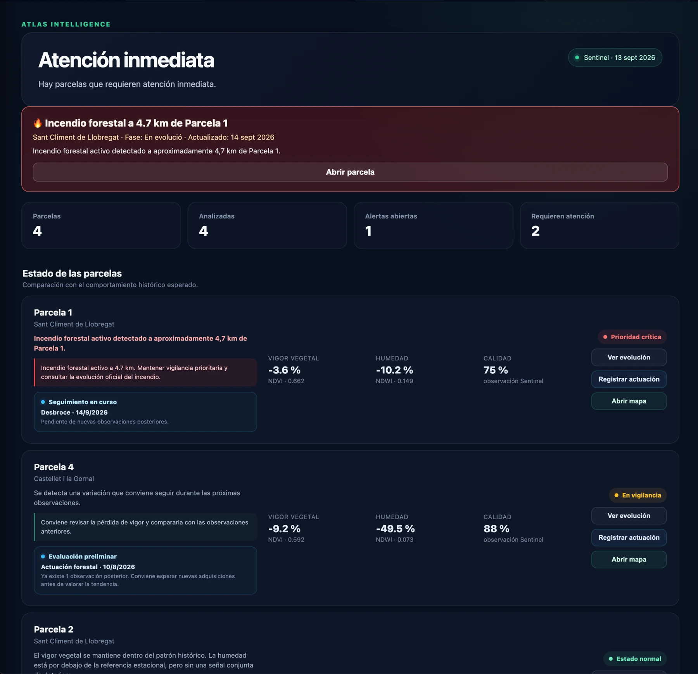
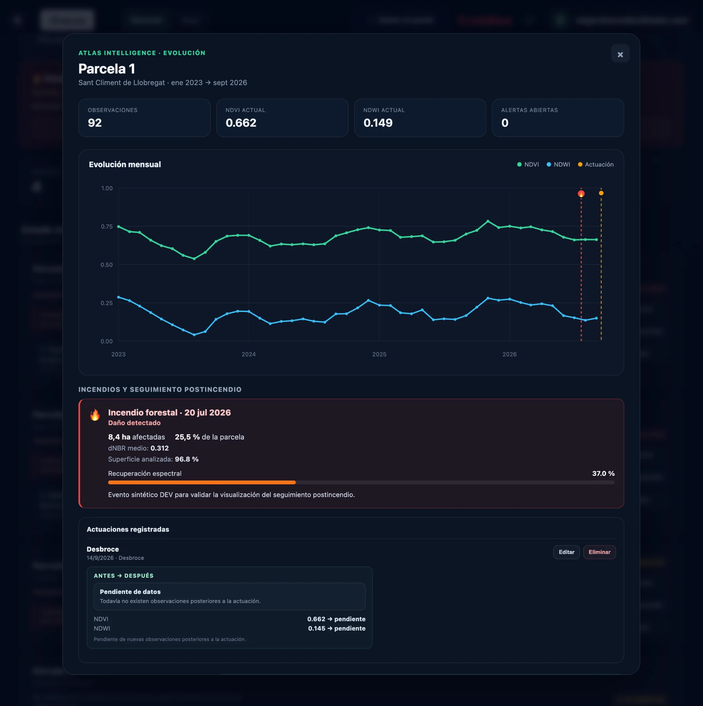
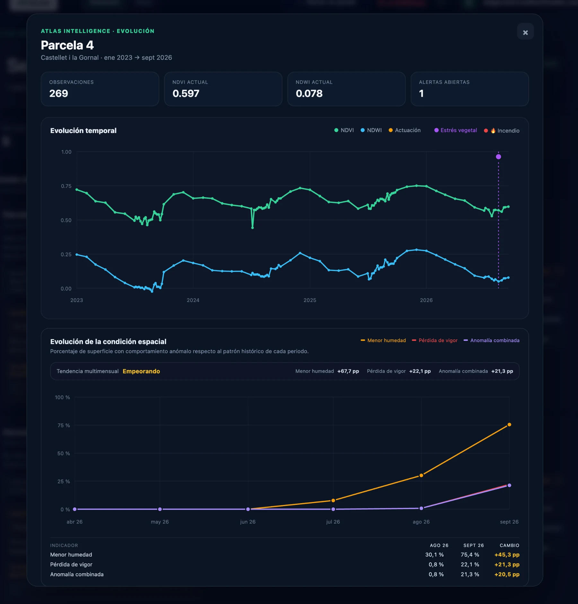
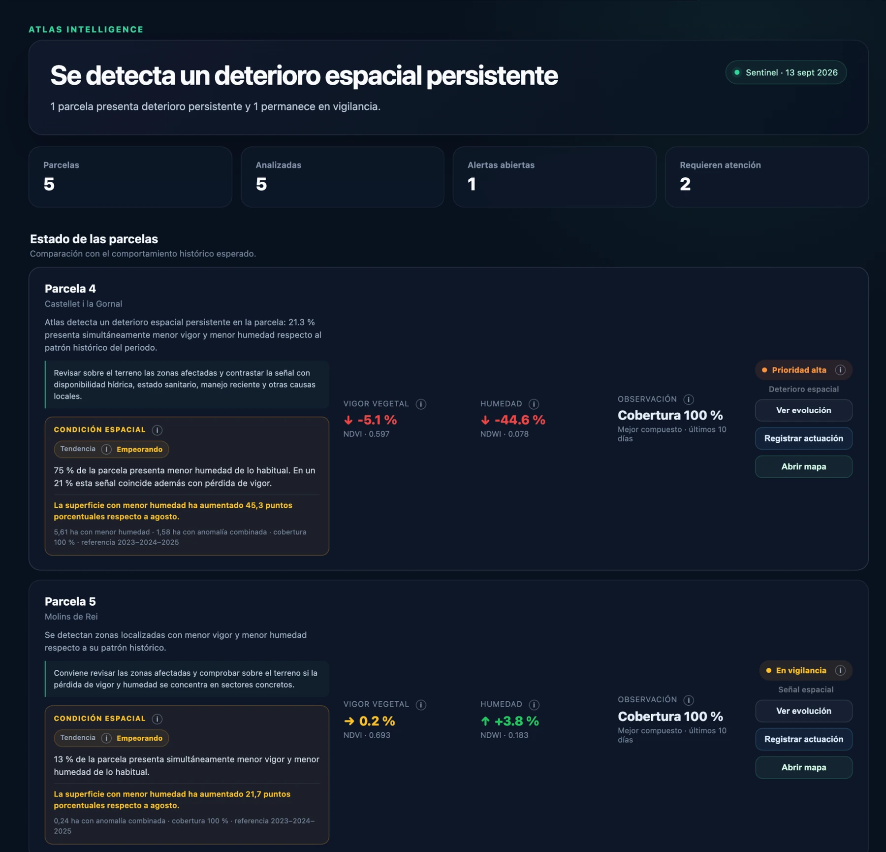

Una plataforma para transformar grandes volúmenes de información forestal, ambiental y geoespacial en una lectura operativa del riesgo de incendio, la vulnerabilidad del territorio y las prioridades de gestión y actuación.
Observavegetación, humedad, relieve y evolución
Contextualizaentorno protegido, alertas e infraestructuras
De un territorio complejo a una decisión comprensible.
Atlas BioScan integra información que normalmente está dispersa entre mapas, fuentes oficiales, series temporales y análisis técnicos. La plataforma la reúne, la interpreta y la convierte en una visión única para responder tres preguntas: qué está ocurriendo, dónde conviene actuar y cómo hacer seguimiento.
01 · Inteligencia territorial
Más que visualizar datos: compararlos, interpretarlos y priorizarlos.
La plataforma trabaja con indicadores de lectura territorial y ambiental que convierten señales complejas en una lectura clara, visual y accionable para perfiles técnicos y operativos.
IVE
Estado de la vegetación
Lectura del comportamiento y la condición vegetal para detectar diferencias, tendencias y señales relevantes.
ICA
Condición integrada
Una visión sintética que ayuda a contextualizar el estado territorial y comparar zonas con criterios homogéneos.
IPI
Prioridad de intervención
Una lectura orientada a ordenar áreas de atención y facilitar dónde concentrar primero recursos y revisión técnica.
Atlas Intelligence · visión operativa
De una señal territorial a una prioridad clara.
La capa de inteligencia de Atlas BioScan transforma la observación continua en una lectura accionable: identifica qué parcelas requieren atención, explica el contexto de cada alerta y conserva la trazabilidad de la decisión operativa.
Panel de atención inmediata
Priorizar primero lo que realmente necesita intervención.
Alertas, variaciones de vigor y humedad, calidad de observación y estado operativo se reúnen en una misma vista para reducir el tiempo de análisis y acelerar la respuesta sobre el terreno.
Detección automáticaIncidencias críticas y parcelas en vigilancia.
Contexto en una vistaIndicadores clave junto a la situación de cada parcela.
Acción directaEvolución, registro de actuaciones y acceso al mapa.
Atlas Intelligence · resumen operativo

02 · Lectura multicapas
El territorio no se entiende con una sola capa.
Atlas BioScan combina observación de la vegetación, agua, relieve, protección ambiental, población e infraestructuras para aportar contexto a cada decisión.
Vigor y heterogeneidadLectura espacial del comportamiento vegetal y sus diferencias internas.
Humedad y estrésSeguimiento de variaciones relacionadas con disponibilidad y comportamiento hídrico.
Relieve y pendienteContexto topográfico para entender condicionantes de accesibilidad, continuidad y exposición.
Espacios protegidosContextualización de parcelas y actuaciones respecto a ámbitos ambientales sensibles.
Población e interfaz urbano-forestalRelación entre territorio, presencia humana y zonas que requieren especial atención.
Infraestructura eléctricaLectura de líneas, nodos y proximidades relevantes dentro del análisis territorial.
03 · Prevención y contexto operativo
Una capa de prevención que se actualiza con el territorio.
Atlas BioScan conecta la lectura estructural con información operativa para situar cada zona dentro de un contexto real de prevención y alerta.
Incendios e históricoMemoria territorial y seguimiento de eventos para analizar impacto, evolución y recuperación.
Alertas y situación oficialInformación de contexto que ayuda a interpretar el escenario preventivo del momento.
Franjas y corredoresLectura de áreas preventivas vinculadas a caminos, núcleos e infraestructuras críticas.
Prioridades de actuaciónOrdenación visual de áreas que requieren revisión, planificación o intervención preferente.
Atlas no se limita a mostrar el estado actual. Las series históricas y la condición espacial permiten distinguir una oscilación puntual de un deterioro persistente y comprobar qué sucede después de una actuación o un incendio.
Seguimiento postincendio
Medir impacto, evolución y recuperación.
La serie histórica de NDVI y NDWI contextualiza el evento, mientras el seguimiento postincendio registra superficie afectada, recuperación espectral y actuaciones realizadas.
Evolución · parcela

Condición espacial
Detectar persistencia, extensión y tendencia.
La lectura multivariable combina vigor, humedad y anomalía espacial para visualizar cuánto territorio se desvía de su patrón histórico y cómo cambia mes a mes, sin saturar la lectura con información innecesaria.
Analítica multitemporal

04 · Módulo de ejecución
La plataforma no termina cuando detecta un problema.
El valor operativo aparece cuando el análisis se transforma en una actuación trazable. Atlas BioScan incorpora una lógica de ejecución para seguir el trabajo desde la detección hasta la comprobación.
Detectaridentificar zonas o situaciones relevantes
Priorizarordenar según criticidad y contexto
Planificardefinir actuación, ámbito y seguimiento
Ejecutarregistrar estado y avance del trabajo
Comprobarverificar resultado y evolución posterior
01Zona detectadaEl sistema sitúa la atención
02Prioridad asignadaLa información se convierte en criterio
03Actuación definidaDel mapa a una acción concreta
04Estado de ejecuciónSeguimiento del trabajo en curso
05Resultado comprobadoNueva lectura del territorio
Priorización territorial
Decisiones operativas respaldadas por evidencia visual.
Cada prioridad conserva el contexto que la explica: superficie afectada, tendencia, cobertura observacional y comparación con el comportamiento histórico esperado.
Series temporalesLectura histórica para entender la evolución de cada parcela sin perder el contexto operativo.
Condición espacialExtensión y tendencia multimensual para valorar persistencia y severidad.
Jerarquización operativaPrioridad alta, vigilancia o estado normal con acceso directo al seguimiento y al mapa.
Atlas Intelligence · priorización territorial

05 · Salidas y apoyo a decisión
La información debe poder explicarse, compartirse y defenderse.
Por eso Atlas BioScan no se limita a la pantalla del visor. La plataforma dispone de herramientas para convertir el análisis en una salida comprensible para técnicos, responsables, entidades y clientes.
Informes PDF
Generación de documentos que resumen contexto, indicadores y lectura territorial en un formato preparado para compartir.
Asistente BioScan
Una capa de ayuda contextual para interpretar la información visible y facilitar la comprensión del escenario analizado.
Lectura por parcela y territorio
Capacidad de pasar de la visión global a unidades concretas sin perder el contexto del conjunto.
Seguimiento temporal
Comparación entre periodos para identificar cambios, evolución y persistencia de situaciones relevantes.
Priorización visual
Mapas y clasificaciones que permiten comunicar con rapidez dónde está la atención y por qué.
Entorno privado
Acceso controlado para que cada organización consulte y trabaje dentro de un entorno propio.
Aplicaciones
Una misma plataforma, distintas necesidades territoriales.
A01
Prevención forestal
Priorización de zonas, planificación de actuaciones y seguimiento de trabajos preventivos.
A02
Administración local y supramunicipal
Una visión compartida del territorio para ordenar necesidades, justificar prioridades y coordinar decisiones.
A03
Propiedad y gestión forestal
Lectura de parcelas, condicionantes y evolución para planificar mejor el mantenimiento y la intervención.
A04
Infraestructura y entorno
Análisis de proximidades y contexto territorial para apoyar prevención alrededor de elementos sensibles.
Atlas BioScan
Del dato territorial a una prioridad operativa.
Una plataforma desarrollada por Arcadia Global Analytics para integrar observación, inteligencia y ejecución dentro de una misma herramienta de gestión territorial.